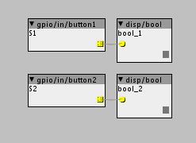

Greetings!
New user here with the Core with the Music Thing Modular AxoControl.
Anyway I want to start in DFU mode, but where is the S1 switch? Is it under the AxoControl maybe?
Have a great weekend all

Greetings!
New user here with the Core with the Music Thing Modular AxoControl.
Anyway I want to start in DFU mode, but where is the S1 switch? Is it under the AxoControl maybe?
Have a great weekend all
Never used them myself, but the tiny, tiny small black buttons, on the front of the board, next to the LED, I am pretty sure are s1 and s2.
You can test them by using the object called gpio/in/button1 and gpio/in/button2 and connect a disp/bool to them and push the buttons and see what happens.

Thanks for the response and sorry for the late reply. Time moves erratically.
I found the switch, thanks. So tiny 
I started it in DFU mode, but then I got this:
DFU device found, but can't get access : Operation not supported or unimplemented on this platform
Please install the WinUSB driver for the "STM32 Bootloader":
Launch Zadig (http://zadig.akeo.ie/) , select "Options->List all devices", select "STM32 BOOTLOADER", and "replace" the STTub30 driver with the WinUSB driver
No devices in DFU mode detected. To bring Axoloti Core in DFU mode, remove power from Axoloti Core, and then connect the micro-USB port to your computer while holding button S1. The LEDs will stay off when in DFU mode."
I replaced the STTub30 driver with the WinUSB driver, but still get the same message next restart in DFU mode...What to do?
Well I got a step further, but keep on stumbling:
Link to firmware CRC E95BAC96
Start disconnect
Done disconnect
Start flashing firmware with DFU
java.io.IOException: Cannot run program "C:\Program" (in directory "C:\Program Files (x86)\Axoloti\app\firmware"): CreateProcess error=2, The system cannot find the file specified
java.io.IOException: Cannot run program "C:\Program" (in directory "C:\Program Files (x86)\Axoloti\app\firmware"): CreateProcess error=2, The system cannot find the file specified
at java.lang.ProcessBuilder.start(ProcessBuilder.java:1048)
at java.lang.Runtime.exec(Runtime.java:620)
at java.lang.Runtime.exec(Runtime.java:450)
at qcmds.QCmdShellTask.Do(QCmdShellTask.java:114)
at qcmds.QCmdProcessor.run(QCmdProcessor.java:190)
at java.lang.Thread.run(Thread.java:748)
Caused by: java.io.IOException: CreateProcess error=2, The system cannot find the file specified
at java.lang.ProcessImpl.create(Native Method)
at java.lang.ProcessImpl.(ProcessImpl.java:386)
at java.lang.ProcessImpl.start(ProcessImpl.java:137)
at java.lang.ProcessBuilder.start(ProcessBuilder.java:1029)
... 5 more
Flashing firmware failed!